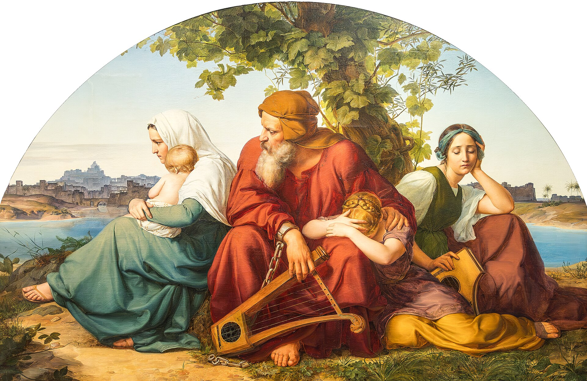

Lamentations 5 — The Mister Translation

Not drawn from Lamentations; the same painting stands on Leviticus 26 and Jeremiah 29. It is used here for what the chapter says of mourning and music: the young men have ceased from their music and the dance has turned to mourning (Lamentations 5:14–15), and Bendemann’s two harps lie unplayed. The nursing mother is only a likeness: the chapter’s mothers are like widows (5:3).
.jpg){kind=link}
Translator’s Notes
⭐ “Remember, Jehovah.” The last chapter of the book is a prayer, spoken in the plural, and its first word is the command zekhor, ‘remember’ (zakhar). The letters of “Remember, Jehovah” stand in three verses of the Hebrew Bible: here; Psalm 137:7, where it is the same command and what Jehovah is asked to remember is the day of Jerusalem, against the sons of Edom, the Edom of the last verses of chapter 4 (4:21–22, now on these pages); and Jeremiah 44:21, where the same letters are a question, whether Jehovah did not remember. The plea to look has been made before: “See, Jehovah” stands in four verses of Lamentations, at 1:9, 1:11, 1:20 and 2:20 (all now on these pages). The scroll writes the next verb in a short form (habbet) and the reading tradition says habbitah; the archive prints both. The KJV has “what is come upon us: consider, and behold our reproach”, the NIV “look, and see our disgrace” and the NWT 2013 “Look and see our disgrace”. ⚠ The Geneva Bible prints a heading in this verse, “The prayer of Jeremiah”; the Hebrew has no such title.
⭐ The inheritance. The land that has passed to zarim, strangers, was the one the law said could not be sold for good, because the land is Jehovah’s and Israel are strangers and settlers with him (Leviticus 25:23, now on these pages), with a redemption to be granted in all the land of their possession (25:24). Here the strangers hold it and no redeemer is named. And the family has turned into the widow of the first chapter: the city that “has become like a widow” at Lamentations 1:1 (now on these pages) is now the mothers, “like widows”, with children who are orphans, the scroll writing the word for ‘no’ in verse 3 in a form that the reading tradition changes.
⭐ Water for money, and a neck pursued. The things that came free now cost: water and wood, bought. The law had Israel buy water from Edom as it passed through (Deuteronomy 2:6, now on these pages), and the prophet had once called the thirsty to come for water without money (Isaiah 55:1, now on these pages). Verse 5 turns on the neck, and the shelf splits on it: the KJV has “Our necks are under persecution”, the ASV “Our pursuers are upon our necks”, the NIV “Those who pursue us are at our heels” and the Douay “We were dragged by the necks”.
⭐ “We gave the hand.” “We gave the hand” (natnu yad) stands in two verses of the Hebrew Bible: here, and 1 Chronicles 29:24, where the princes and the mighty men and the sons of David ‘gave the hand’ under Solomon, which is to submit. The shelf reads it that way: the KJV has “We have given the hand to the Egyptians, and to the Assyrians, to be satisfied with bread”, the NIV “We submitted to Egypt and Assyria to get enough bread” and the TLB “We beg for bread from Egypt, and Assyria too”. Egypt and Assyria are the two powers the prophet puts side by side in Jeremiah 2:18 (now on these pages), where the way to Egypt is to drink the waters of the Shihor, and the way to Assyria to drink the waters of the River; the verse does not say when. (Egypt, Assyria.)
⚠ The fathers, and “we have borne their iniquities”. The word is avon (avon), the guilt and what it costs, and the shelf splits on it again as it did at 4:6: the ASV has “And we have borne their iniquities”, the NIV “we bear their punishment”. The verse lines up with a tension in the law that this book sits inside. Exodus 34:7 (now on these pages) has Jehovah visiting the iniquity of the fathers on the children; Deuteronomy 24:16 says fathers shall not be put to death for the children, nor children for the fathers; and Jeremiah 31:28–29 (all now on these pages) says the day is coming when the saying about the fathers who ate the sour grapes will be said no more, because each will die for his own iniquity. Verse 7 says it, in the plural: our fathers sinned, we bear it. And verse 16 says the other thing: “we have sinned”. This translation keeps both and does not reconcile them. The scroll writes the words for ‘are not’ and for ‘we’ in verse 7 in forms that the reading tradition changes.
⭐ Slaves, and the sword of the wilderness. The shelf has the KJV “Servants have ruled over us”, the NIV “Slaves rule over us” and the TLB “Our former servants have become our masters”. The bread of verse 9 is brought in at the risk of life, because of the sword of the wilderness: out in the open, where the grain is. Then the skin of verse 10, and the shelf splits on the color: the KJV has “Our skin was black like an oven”, the Douay “Our skin was burnt as an oven”, the NIV “Our skin is hot as an oven” and the NWT 2013 “Our skin has become as hot as a furnace”. “Burning heat” (zal’afot) stands in two verses of the Hebrew Bible: here, and Psalm 11:6, where it is the burning wind that is the portion of the cup of the wicked.
⚠ The women. The verb of verse 11 is innu, ‘they humbled’, and the shelf says what it means: the KJV has “They ravished the women in Zion”, the NIV “Women have been violated in Zion”, the Douay “They oppressed the women in Sion” and the NWT 2013 “The wives in Zion they have humiliated”. This translation keeps the Hebrew word and leaves the reader to hear what the versions that say it plainly say. The verse does not name those who did it.
⭐ The faces of the elders. “Were honored” (nehdaru) stands in this one verse, the passive of the verb in the law, which says to rise before the gray head and to honor the face of the old man (Leviticus 19:32, now on these pages). The elders of chapter 4 were not shown favor either (4:16, now on these pages). And before that, the princes: the KJV has “Princes are hanged up by their hand”, the NIV “Princes have been hung up by their hands” and the TLB “Our princes are hanged by their thumbs”. The Hebrew says be-yadam, ‘by their hand’, and does not say whose.
⭐ The mill, the wood, the music. The shelf splits on verse 13: the KJV has “They took the young men to grind”, the ASV “The young men bare the mill”, the NIV “Young men toil at the millstones” and the Douay “They abused the young men indecently”. The wood is the wood that was bought for a price in verse 4, now carried by boys who stumble. The elders are gone from the gate (verse 14), and the young men from their music (neginah), the word of the mocking song of Lamentations 3:14 (now on these pages) and of 3:63. Now the song has stopped.
⭐ The dance. “Our dancing has turned to mourning” is the reverse of the promise of Jeremiah 31:12 (now on these pages), where the virgin rejoices in the dance and Jehovah turns mourning into joy. Verse 15 is the same turning, run the other way.
⭐ The crown, and the confession. “The crown of our head” stands in this one verse; the verse does not say whose crown, and says ‘our head’. And then “woe, now, to us” stands in this one verse, with the sentence that the chapter has been moving toward: “for we have sinned”. The KJV has “woe unto us, that we have sinned” and the NIV “Woe to us, for we have sinned!”. It is the other half of verse 7: the fathers sinned, and we bear it; and we have sinned.
⭐ Sick heart, dim eyes, foxes. “Our heart is sick” stands in this one verse. The shelf has the KJV “For this our heart is faint; for these things our eyes are dim”, the Douay “Therefore is our heart sorrowful” and the NWT 2013 “Because of this our heart is sick”. And the last picture is the mountain: the word for foxes, in this spelling, stands in two verses of the Hebrew Bible, here and Judges 15:4 (now on these pages), Samson’s three hundred (shual). The KJV has “the foxes walk upon it”, the NIV “with jackals prowling over it” and the TLB “wild animals lurking in the ruins”. The jackals of 4:3 were another word (tannim); here it is foxes, on the mountain of the temple.
⭐ “You, Jehovah, sit forever.” The chapter turns on a pronoun, attah, ‘you’. “Sits forever” (le’olam teshev) stands in three verses of the Hebrew Bible: here; Psalm 102:13, where it is also said of Jehovah; and Joel 4:20, where it is said of Judah and Jerusalem. And “your throne from generation to generation” stands in this one verse.
⭐ “Why forever?” “Why forever” stands in this one verse, and it answers a line three chapters back: Lamentations 3:31 (now on these pages) says that Jehovah will not cast off forever, and here the people ask why he has forgotten them forever, left them for length of days. The book does not say that either of them is wrong.
⭐ Bring us back. The verb is shuv, ‘to turn, to return’ (shuv), and the request is that Jehovah do the turning first: hashivenu, ‘cause us to return’, and we shall return. Lamentations 3:40 (now on these pages) had the people say it of themselves, “let us return to Jehovah”. The scroll writes the last verb of verse 21 in a short form and the reading tradition says it in a longer one. The KJV has “and we shall be turned”, the NIV “that we may return”, the Douay “and we shall be converted” and the NWT 2013 “Bring us back to yourself, O Jehovah, and we will readily return to you”. And “renew our days” stands in this one verse.
⚠ The last verse. The book ends on a clause that can be read two ways, and the shelf reads it both. It begins ki im, and the question is whether that is ‘but’ or ‘unless’. The KJV has “But thou hast utterly rejected us; thou art very wroth against us”, the ASV “But thou hast utterly rejected us; Thou art very wroth against us”, and the NWT 1984 “However, you have positively rejected us”; against them the NIV has “unless you have utterly rejected us and are angry with us beyond measure” and the TLB “Or have you utterly rejected us? Are you angry with us still?”. This translation reads it as the open question, ‘unless’, with the verse running straight on from the request of verse 21. The last word of the Hebrew is me’od, ‘exceedingly’. It is reported that the Jewish reading custom repeats verse 21 after verse 22, so that the book does not end on “rejected us”; that is reported here and not checked in the archive.
Patterns worth carrying forward
What makes this chapter unlike its neighbors. It has twenty-two verses, the number of the Hebrew letters, and no acrostic: chapters 1, 2 and 4 spend one letter on each verse, chapter 3 spends three, and chapter 5 keeps only the count. It reads as a prayer in the plural from its first word (“Remember”) to its last (“exceedingly”). The letters, the markers of the scroll and the written-and-read pairs are the same apparatus as before: six pairs in five verses here (1, 3, 5, 7 twice, and 21; ketiv/qere).
Where this translation keeps the exact / distinct words: “iniquity” (avon) kept at verse 7 as it was at 4:6, 13 and 22, so that the fathers’ guilt and the people’s own read as the one word; “forever” kept as one word across verses 19 and 20, so that Jehovah’s sitting and the people’s being forgotten are set against each other in the same word; and “return” (shuv) kept as one verb in verse 21, as the request and its answer.
Echoes paid. The widow of 1:1 is the mothers of verse 3; the elders unhonored at 4:16 are unhonored at verse 12; the “let us return” of 3:40 is the request of verse 21; and the “will not cast off forever” of 3:31 is the question of verse 20.
Echoes planted. Jeremiah 31:28–29 and Ezekiel 18 are where the sour-grapes proverb of verse 7 is taken up; Psalm 137:7 and Psalm 102:13 are the two other places the opening and the middle of this chapter are said in the same words.
Lamentations is now complete on this site: all five chapters, in English and in Spanish.